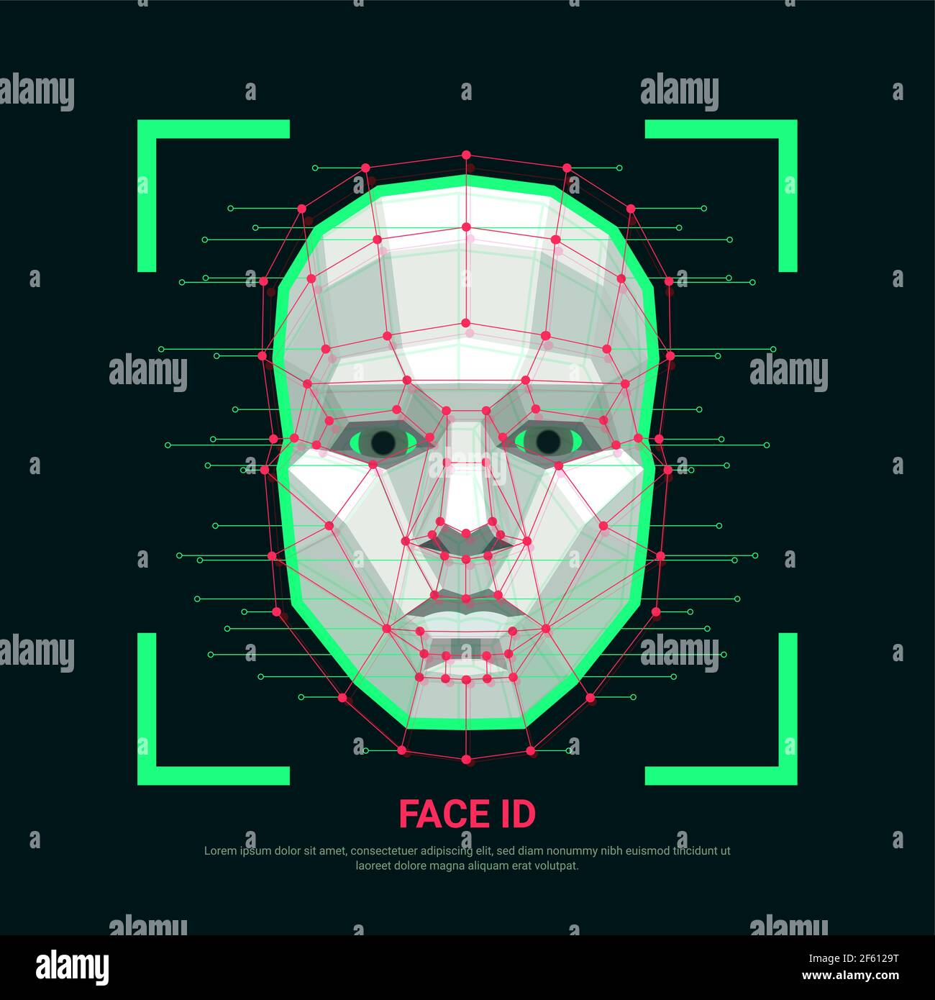

My portfolio



front end web developer
I also grduated from ZION study under the full course of programming and i have gotten my qualified certificate under the guardiness of my teacher MR.Femi I am a person who is positive about every aspect of life. There are many things I like to do, to see, and to experience. I like to read, I like to write; I like to think, I like to dream; I like to talk, I like to listen. I like to see the sunrise in the morning, I like to see the moonlight at night; I like to feel the music flowing on my face, I like to smell the wind coming from the ocean. I like to look at the clouds in the sky with a blank mind, I like to do thought experiment when I cannot sleep in the middle of the night. I like delicious food and comfortable shoes; I like good books and romantic movies. I like the land and the nature, I like people. And, I like to laugh. This is a brief introduction of myself. If you are interested in knowing more, read my articles or take a look at my pictures. Do not expect too much, and keep your sense of humor..
In general to the tasks associated with developing websites for hosting via intranet or internet. The web development process includes web design, web content development, client-side/server-side scripting and network security configuration, among other tasks. Am good in all this aspect
Web designers plan, create and code internet sites and web pages, many of which combine text with sounds, pictures, graphics and video clips. A web designer is responsible for creating the design and layout of a website or web pages. It and can mean working on a brand new website or updating an already existing site..
i also do deploying of a website which means that you are deploying changes you have made to your website, typically code, from source control to an environment (typically development, staging, or live) read my articles or take a look at my pictures the rest of my story is wonderful am good and wonderful.
SEO means Search Engine Optimization and is the process used to optimize a website's technical configuration, content relevance and link popularity so its pages can become easily findable, more relevant and popular towards user search queries, and as a consequence, search engines rank them better.Am also good at this service.